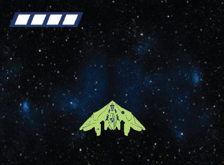
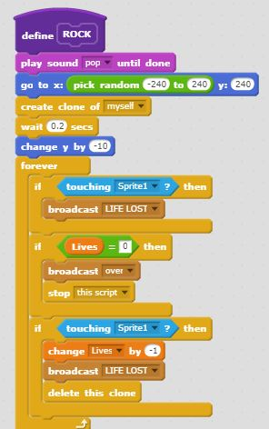
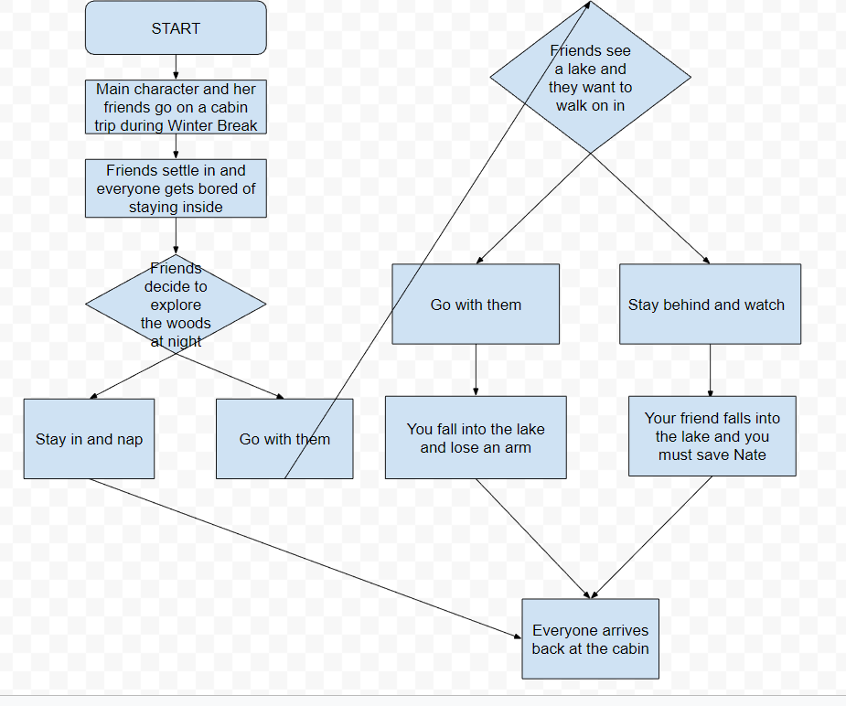

Click on Photo to Play

In the game, the player is the Guardian of the Galaxy. The user is represented by a spaceship and must move left and right to dodge asteroids. After a certain amount of time that the game is played, the game will increase in difficulty with the addition of a bigger ship to dodge. There was not a point system but each time the player ship hit an asteroid, a health bar was used up. There were only 4; each health bar was a life. The use of randomness was the number and amount of asteroids to dodge. The game ends when the player successfully dodges the asteroids for 45 seconds. The user loses when all of their health bars are depleted and they get the notification that their ship crashed.
The game was inspired by Marvel’s Guardians of the Galaxy. The user sprite is the ship the Milano from the movie. The increase in difficulty feature includes another ship called the Dark Aster. The backstory of the game is from Avengers: Infinity War. In regards to success in the development process of the game, there were basic features that were simple to implement. When asteroids fell, it was easy to engineer a popping sounding to accompany the visuals. To produce many asteroids, randomization was used, and this was gone over in class. As for obstacles, there was difficulty in making the asteroid sprites fall down. There was an error in the code; instead of using the “when touching edge,” x and y axises were used and specific numbers were set. Another obstacle included the change from home screen to backstory to game and to get it to reset once the game ended. This meant learning to broadcast messages. If there was more time and resources, the game could increase in difficulty and there would be other obstacles besides the asteroid. There could be levels to complete and a final mission on the Planet of Knowhere to retrieve the last Infinity Stone.

This is an algorithm because it provides step by step directions for the system to make the game run the way it is intended. When the rock (asteroid) is shown randomly (-240 to 240) on screen, it will play a pop sound until it falls down to the end of the y-axis (-240) and disappears. Afterwards, clones will be created every 0.5 seconds and move around by -10 on the y-axis. If the user sprite (ship) touches the asteroid until there are no lives left, the screen that indicates the end of the game appears. If the user is able to get through 40 seconds without losing any health bars, then the winner screen will appear and the ship script will stop moving.
CABIN IN THE WOODS
+During winter break, 4 friends go on a cabin trip for vacation. They experience soemthing tragic as they journey across the woods for some fun and their lives are changed forever.

An incremental proccess was when I created a flowchart to plan out the events and different paths the character would take to reach the ending scene. Each path the character takes would continue to affect the next scene. The flowchart made it easy for the code to be written because the layout was finished so only the diolague needed to be created. An interative procsess was how the input of choices only applied to the A and D key which were both not case sensative. If the user inputed a key that was not A or D, the program would tell them to try again. Putting scenes into functions is a form of procedural abstraction because the user chooses a letter and a function plays in return. A or D ends up playing a set of codes in which the user does not know about. Also, a difficulty we faced was structuring our story. Because we kept changing the story line throughout the planning process and tried to change the code during that time, the flow of the story was affected. We had to go back and recode different parts of the story to better organize the program. got pishA story I really enjoyed was "What in the World is Going on?" because it was a really thought out story line that had lots of options for the user to choose from.